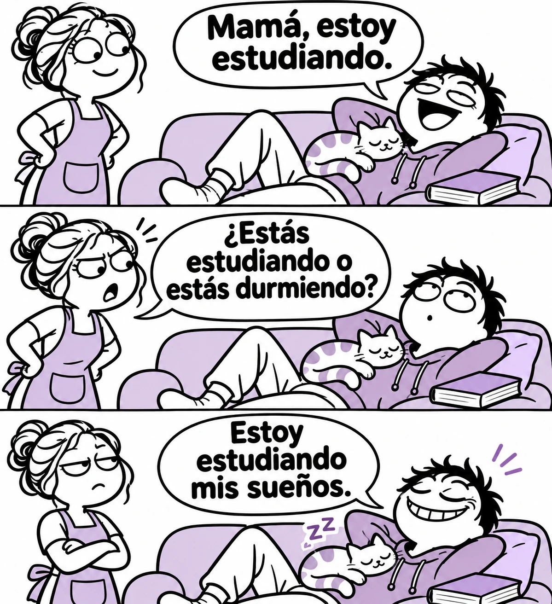

🧩 Estar’ı özneye göre çek.
yo estoynosotros / nosotras estamostú estásvosotros / vosotras estáisél / ella / usted estáellos / ellas / ustedes están
DERS İÇİ ETKİNLİK · (7+8) A1.2
🔎 İspanyolca bir kelimeye dokun: Türkçe, İngilizce ve cümledeki kullanımını keşfet.
01 / BİRLİKTE HATIRLAYALIM
Devam eden bir eylemi anlatırken estar + gerundio kullanırız.
Ben şu anda İspanyolca çalışıyorum.
Me estoy duchando. = Estoy duchándome.
Zamir estar’ın önüne gelebilir veya gerundioya bitişebilir. Sona eklenince gerekli vurgu işaretini koyarız: duchándome, vistiéndome.
02 / ÖNCE SEN SÖYLE
Mastar fiile bak, gerundiosunu söyle. Sonra Türkçe cümleyi İspanyolcaya çevir.
03 / BİRAZ DA GÜLELİM
Önce oku. Estar + gerundio yapılarını bul. Espri nerede?

04 / WORDWALL 1
Ekrandaki yönergeyi takip et ve etkinliği birlikte tamamlayalım.
05 / WORDWALL 2
Cevabını sesli söyle; ardından oyunda seçimini yap.
06 / WORDWALL 3
Estar çekimini ve gerundio biçimini birlikte düşün.
07 / ZAR AT, İLERLE, ANLAT
Emojiyi yorumla; çıkan özneyle estar + gerundio cümlesi kur.
Zar at veya tahtadan bir kare seç. Emojiyi çıkan özneyle anlat; ardından birlikte yeni bir cümleye geçelim. Takılırsan fiil ipucunu ya da örnek cevabı açabilirsin. Örneğin Ella está leyendo un libro.
🐾 Başlangıç → numaraları takip et → 🏁 Bitiş
Bir kareye tıklayarak serbest çalışma yapabilirsin.
08 / OKU, KEŞFET, ANLAT
Mahallede bugün neler oluyor? Metni birlikte okuyalım; bilmediğin her kelimeye dokunabilirsin.
Cümlenin üzerine gel veya bir kelimeye dokun: cümle öbekleri farklı pastel renklerle belirginleşir.
Önce kendi cümleni kur; ardından örnek cevabı ve metindeki ipucunu aç.
💜 İspanyolcacım · Profe Hazel · A1.2